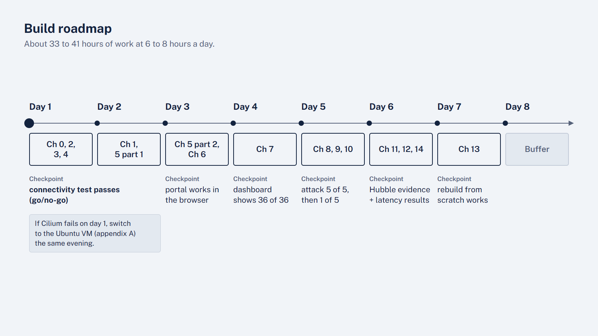
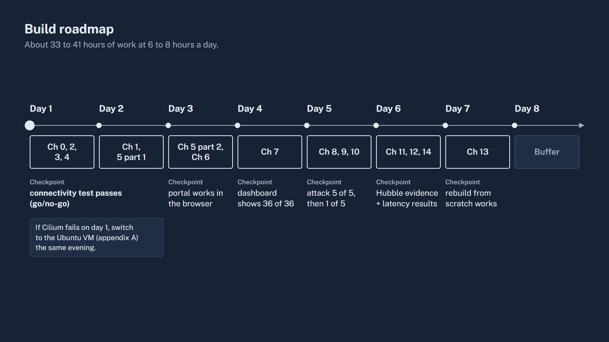

Chapter 0. How to use this guide
This guide takes you from an ordinary Windows laptop to a working micro-segmentation lab, with measured results and the evidence your thesis needs. You'll build it on your own, so every step tells you what to type and what your screen should show, and gives the fix for the errors you're most likely to hit. Read this chapter first. It takes about 15 minutes and ends with a real step that checks your laptop is big enough for the lab.
What you're building, and in what order
You'll build a university "Campus Portal" out of six small services that run on Kubernetes, a system that runs programs across several machines and keeps them running. All of those machines are simulated inside your laptop. First you attack the portal the way a real intruder would, and the attack reaches the grade database and the admin panel. Then you add Cilium network policies, which are rules about who may talk to whom, and run the same attack again. This time it stops after the first step. Your thesis result is the measured difference between those two runs.



Figure 8 is the build roadmap. You attack the flat network in chapter 8, before chapter 10 adds any policy, so you always have a "before" result to compare against.
The whole build takes about 33 to 41 hours. If you work 6 to 8 hours a day that's seven working days plus one spare, and at 3 to 4 hours a day it takes about twice as long. Chapter 15 has the day-by-day plan.
You won't read the chapters strictly in order. On day 1 you read this chapter and then work through chapters 2, 3 and 4. Chapter 4 tells you whether Cilium runs on your laptop, and that's the one thing you need to know as early as possible. At 6 to 8 hours a day you'll know by the evening of day 1, and at 3 to 4 hours a day by the end of day 2. If Cilium won't run, appendix A moves the lab into an Ubuntu virtual machine, a simulated computer that runs inside your real one, and the rest of the guide still applies. Chapter 1, the lab on paper, comes on day 2. If a word in chapters 2 to 4 stops you, look it up in the glossary in appendix D.
The guide has chapters 0 to 15, listed in the progress tracker near the end of this chapter, and appendices A to D. Appendix A is the virtual machine plan, B is a one-page command card, C lists every project file with the chapter that builds it, and D is the glossary, which is in the Arabic edition.
Windows, Ubuntu and the two kinds of command
A terminal is a window where you type commands instead of clicking. It shows a prompt, a short line of text that means "ready, type the next command". You'll use two terminals.
PowerShell is the Windows terminal. To open it, press the Windows key, type powershell and click Windows PowerShell. Its prompt ends in > and looks like this, with your own folder name in place of Sara.
PS C:\Users\Sara>Ubuntu is a version of Linux, and WSL (Windows Subsystem for Linux) is the part of Windows that runs it next to your Windows programs. You install both in chapter 2, which also shows you how to open the Ubuntu terminal. Its prompt ends in $ and looks like this, with your Linux user name and your laptop's name in it.
sara@LAPTOP-1234:~$Almost all of the project runs in Ubuntu, because Docker, the simulated cluster and Cilium all need a Linux kernel, the core of a Linux system, to run on.
Every command in this guide tells you twice which window it goes into. The sentence before it names the window, as in "In PowerShell, run" or "In the Ubuntu terminal, run", and the block carries a small label in its top corner. A block labelled powershell goes into PowerShell. A block labelled bash goes into the Ubuntu terminal, since bash is the program that reads what you type there. A block labelled text is never a command. It holds something to read or compare, such as output, or a file or message that the step tells you to copy somewhere.
Paste one block at a time. In PowerShell you paste with Ctrl+V. In the Ubuntu terminal you paste with Ctrl+Shift+V, because Ctrl+V means something else in Linux terminals. After pasting, press Enter if the command hasn't started by itself. If a warning says the text contains multiple lines, click Paste anyway. Then wait until the prompt comes back before you paste the next block. A few commands keep running until you stop them, and the step says so when that happens. Press Ctrl+C in that window to stop one and get the prompt back.
How a step is laid out
Every step in chapters 2 to 14 has the same five parts, always in the same order.
- What the step is for, in one or two sentences. Read this part even when you're in a hurry, because when something breaks later, knowing what the step was for tells you where to look.
- The command or the file, in a grey code block. When a step gives you a whole file, the sentence before the block names the file's path inside your project folder.
- What each part does. For a command, each piece is explained under the block. For a file, numbered notes such as (1) and (2) under the block explain the lines that need explaining.
- A block labelled You should see, holding the real output the command printed when this guide was tested, followed by a sentence naming the exact line that has to match on your screen.
- A block labelled If you see this instead, with the two or three failures most likely at that step. Each one shows the exact error text, says what caused it and tells you how to fix it.
Each build chapter ends with a checkpoint and a git commit command. The checkpoint is a short check, usually one command. The line or lines it names must match the guide exactly, while parts the guide says will change, such as pod names, ages and IP addresses, don't count. Git is a program that keeps snapshots of your project folder, and a commit is one saved snapshot, so after every chapter you can always get back to the last state that worked. You set Git up in chapter 2.
Placeholders: words in angle brackets
A few commands contain a placeholder, a word in angle brackets such as <WinUser>, which stands for a value only you know. Replace the whole placeholder, brackets included, with your own value. Everything outside the angle brackets is typed exactly as shown, spaces and capital letters included.
<WinUser> means the name of your folder under C:\Users, which isn't always the name Windows greets you with. When Windows was set up with a Microsoft account, the folder often gets a shortened name. In PowerShell, run this to read it.
$env:USERPROFILEC:\Users\ASUSThat's the folder on the laptop the guide was tested on. Yours prints a line such as C:\Users\sarak, and the part after the last backslash, here sarak, is your <WinUser>. The path /mnt/c/Users/<WinUser>/Downloads then becomes /mnt/c/Users/sarak/Downloads.
Files you paste, files you type
You paste most project files in full and then check them. Three pieces you type by hand, because typing forces you to read every line. They are the file k8s/policies/1-baseline.yaml, the api policy inside k8s/policies/2-allow.yaml and the check_image function in apps/news.py. The chapter that builds each one tells you when to start typing.
Copy from the Docs page, not a PDF
Copy commands and files from the online Docs page of this guide, the page whose link you were given, or from a .docx copy that you download through that page's export option. Never copy from a PDF. A PDF often turns straight quotes into curly ones and loses or merges spaces, and a command copied from it then fails with an error that seems to have nothing to do with what you pasted. If all you have is a PDF, get the page's link from whoever gave you the guide before you start chapter 2.
When your output doesn't match
Your screen won't match the guide character for character, and it doesn't have to. Some parts change on every run, and the text under each output names them. Pod names end in different random letters, and your IP addresses, dates and timings will differ from the guide's. When something doesn't match, go down this list in order.
- Ignore the parts the guide says will change. Compare everything else, above all the line that the "You should see" text names, such as
PORTAL: 6/6 OK. - If that line is different, or you got an error, find the line that names the error. Python puts it on the last line of its message, while most other tools put it near the top. Look for that exact text in the step's "If you see this instead" block.
- If it isn't there, go to chapter 13. It has a table of symptoms and fixes built from every error met while this guide was tested, plus a method for finding which layer is broken.
- If you changed files since your last commit,
git diffshows what changed in files Git already tracks, andgit restore <file>puts such a file back the way it was at the last commit, as long as you haven't rungit addsince. Chapter 2 explains both. - Rebuild from scratch only as the last resort. Chapter 13 shows how.
One rule
Never start the next chapter in your reading order until the current chapter's checkpoint matches. Every chapter builds on the one before it, and a problem you carry forward tends to surface two chapters later as an error that points somewhere else entirely. Caught at the checkpoint, a mismatch usually takes a few minutes to fix, but if it only shows up in chapter 10 it can cost you a day.
Practice step: check that your laptop can run the lab
The lab runs three simulated machines, the seven programs that make up the portal (the six services plus a small helper) and Cilium, all at the same time. In chapter 3 you hand about 10 GB of memory and 4 processors to WSL, the virtual machine that Ubuntu runs in. A smaller laptop can't run it, and it's better to find that out today than halfway through day 2. This is also your first step written in the five-part layout, so read it through once before you type anything.
In PowerShell, run this command to read how much memory your laptop has.
[math]::Round((Get-CimInstance Win32_ComputerSystem).TotalPhysicalMemory / 1GB, 1)Get-CimInstance Win32_ComputerSystem asks Windows for facts about the computer. .TotalPhysicalMemory picks out the memory size, which Windows reports in bytes. / 1GB turns the bytes into gigabytes. [math]::Round( together with , 1) at the end rounds the answer to one decimal place.
You should see a single number on one line.
15.9That's the value from the laptop the guide was tested on. Yours must be 13.5 or more. A laptop sold with 16 GB prints a number a little under 16, because the graphics chip and the firmware keep a slice of memory for themselves.
Now count the processors. In PowerShell, run this.
(Get-CimInstance Win32_ComputerSystem).NumberOfLogicalProcessorsNumberOfLogicalProcessors counts the processor threads Windows can hand work to. Ubuntu sees the same kind of count as its number of CPUs.
You should see one whole number.
12Your number will probably differ from the tested laptop's. It must be 4 or more.
Last, check the free disk space, which needs no command. Press Windows+E to open File Explorer and click This PC in the left-hand pane. Under "Devices and drives", the drive marked (C:) shows a line such as "120 GB free of 476 GB". You need at least 30 GB free. Ubuntu, Docker, the three simulated machines and every image (the packaged programs the lab downloads and builds) all live on drive C:, and the file that holds Ubuntu's whole disk grows as you work but doesn't shrink by itself.
If you see this instead
'[math]::Round' is not recognized as an internal or external command,
operable program or batch file..NumberOfLogicalProcessors was unexpected at this time.You typed the command into Command Prompt, the older black Windows terminal, which doesn't understand PowerShell commands. The first message comes from the memory command and the second from the processor command. Close Command Prompt, open Windows PowerShell as described earlier, and run the command again.
The memory number is below 13.5, for example 7.9 or 11.8. That means your laptop has 8 GB or 12 GB of memory, and the cluster won't fit beside Windows. Use a laptop with 16 GB or more, or have memory added, before you go any further.
Drive C: has less than 30 GB free. Empty the Recycle Bin first. Then open Settings > System > Storage > Temporary files, tick everything except Downloads and click Remove files. If that still isn't enough, move large personal files such as videos to another drive or a USB disk, and check This PC again.
If the processor count is below 4, the lab can't run on this laptop at all. You'll need a different machine.
Chapter 2 checks the last requirement, that virtualization is switched on.
Tested versions
The guide was validated on 19 November 2026 with the versions below. WSL, Ubuntu and Docker Engine keep publishing updates, so you may get a slightly newer release than the table shows, and that's fine as long as check-env.sh in chapter 3 passes. Everything from kind down to the hubble CLI, and the Python packages, is installed by exact version. A CLI is a command-line tool, a program you run by typing its name in a terminal. Those versions must match the table even if something newer has come out, because a newer one breaks this lab. kind starts each simulated machine from a node image, the packaged system the machine boots from, and kind's default node image holds Kubernetes 1.37, which Cilium 1.20 doesn't support. The cilium CLI also installs Cilium 1.20.3 unless you ask for 1.20.5. The commands in chapters 3 and 4 name the exact version every time.
| Component | Version | What it is | Installed in |
|---|---|---|---|
| Windows | 11 (Pro used for validation, Home also works for WSL) | your laptop's operating system | already there |
| WSL | 3.0.5, kernel 6.18.58.1-microsoft-standard-WSL2 | runs Linux inside Windows | chapter 2 |
| Ubuntu | 24.04.5 LTS | the Linux system you work in | chapter 2 |
| Docker Engine | 29.10.0 (Docker's apt repo, not Docker Desktop) | builds images and runs containers | chapter 3 |
| kind | v0.33.0, node image kindest/node:v1.36.4 |
runs a Kubernetes cluster as Docker containers | chapter 3 |
| kubectl | v1.36.6 | the command you use to talk to Kubernetes | chapter 3 |
| cilium CLI | v0.20.3 (its default is Cilium 1.20.3, so always pass --version 1.20.5) |
installs and checks Cilium | chapter 3 |
| Cilium | 1.20.5 | the network plug-in that enforces your policies | chapter 4 |
| hubble CLI | v1.20.4 | reads Cilium's record of every connection | chapter 3 |
| Python (WSL) | 3.12.3 | runs the dashboard and the latency test | comes with Ubuntu |
| Python packages | flask 3.1.0, gunicorn 23.0.0, psycopg2-binary 2.9.10, requests 2.32.3 | web framework, web server, PostgreSQL driver, HTTP client | flask and requests in chapter 3, all four inside the images in chapter 5 |
Docker's apt repo is the download source Docker runs for apt, Ubuntu's package installer. Docker Desktop is a separate Windows app that this guide doesn't use. The hubble CLI is numbered separately from Cilium, and 1.20.4 is the release that was tested with Cilium 1.20.5, so the different last digit is expected.
Your project folder, ~/microseg, at the end
Everything you build lives in one folder inside Ubuntu, ~/microseg. The ~ is Linux shorthand for your home folder, /home/<user>, where <user> is the Linux user name you create in chapter 2. The map below shows the folder as it looks after chapter 14, ordered by the chapter that adds each item. ls -a lists the top-level names in alphabetical order instead. Plain ls hides names that start with a dot, such as .git.
~/microseg/
.git/ Git's saved snapshots (chapter 2)
.gitignore folders Git should skip (chapter 2)
hello.txt the file-copy drill (chapter 2)
.venv/ Python with flask and requests (chapter 3)
check-env.sh environment checkpoint (chapter 3)
kind-config.yaml shape of the cluster (chapter 4)
setup.sh one-time cluster, Cilium and Hubble setup (chapter 4)
images/ image archives made by setup.sh and deploy.sh (chapter 4)
apps/ the Python services (chapter 5)
requirements.txt Python packages baked into the images
Dockerfile builds campus-app:1.0
Dockerfile.news builds campus-news:1.0
news.py announcements and the vulnerable image checker
api.py login, profile, grades, forgotten /api/export
auth.py password check and tokens
admin.py admin panel with no login
frontend/ the portal's web server files (chapter 5)
default.conf nginx settings
index.html the portal page
db/
init.sql tables and seed data (chapter 5)
k8s/
app.yaml Secret, 6 Services, 7 Deployments (chapter 6)
policies/
1-baseline.yaml default deny, DNS, health checks (chapter 10)
2-allow.yaml one policy per workload (chapter 10)
deploy.sh builds and deploys the portal (chapter 6)
check-portal.sh checks that real users still get through (chapter 6)
dashboard/
app.py dashboard back end (chapter 7)
index.html dashboard page (chapter 7)
measure.py latency test (chapter 12)
results/
latency.csv written by measure.py (chapter 12)
evidence/ outputs and screenshots for your report (chapters 11 to 14)Folders named __pycache__ also appear once you run Python files. Python creates them and Git ignores them, so leave them alone.
Progress tracker
Copy this table into a notebook or a document on Windows. Each time a checkpoint matches, write the date. For chapters that end with a commit, also write the code at the start of the first line that git log --oneline prints, such as 3f2a9c1. The first line is always the newest commit. Chapter 13 uses that code to compare your files with the last state that worked.
| Chapter | Checkpoint that must match | Date | Commit |
|---|---|---|---|
| 0 How to use this guide | none | ||
| 1 What you will build | the 8-row flow table, written from memory, matches | ||
| 2 Before you start | hello.txt copied in and the first commit made |
||
| 3 Set up the environment | 14 of 14 checks passed |
||
| 4 Create the cluster | 3 nodes Ready with their tiers, connectivity test passes | ||
| 5 Write the services | py_compile passes, injection test shows uid=1000(app) |
||
| 6 Deploy the portal | 7 pods 1/1 Running, PORTAL: 6/6 OK |
||
| 7 Build your dashboard | matrix shows 36 of 36 reachable | ||
| 8 Attack the flat network | 5 of 5 steps succeed, Omar's grade is 95 | ||
| 9 Design the policy | your 8 flows match the table in chapter 1 | ||
| 10 Apply micro-segmentation | 0 of 36, then 7 of 36, attack 1 of 5, /api/export gives 403, PORTAL: 6/6 OK |
||
| 11 Read the evidence in Hubble | Policy denied drops from news, api to db FORWARDED |
||
| 12 Measure | results/latency.csv with 20 rows |
||
| 13 Getting unstuck alone | every drill ends with PORTAL: 6/6 OK |
||
| 14 Evidence for your report | all files present | ||
| 15 Day-by-day plan | none |
Chapter 1 comes on day 2, so fill in its row then.